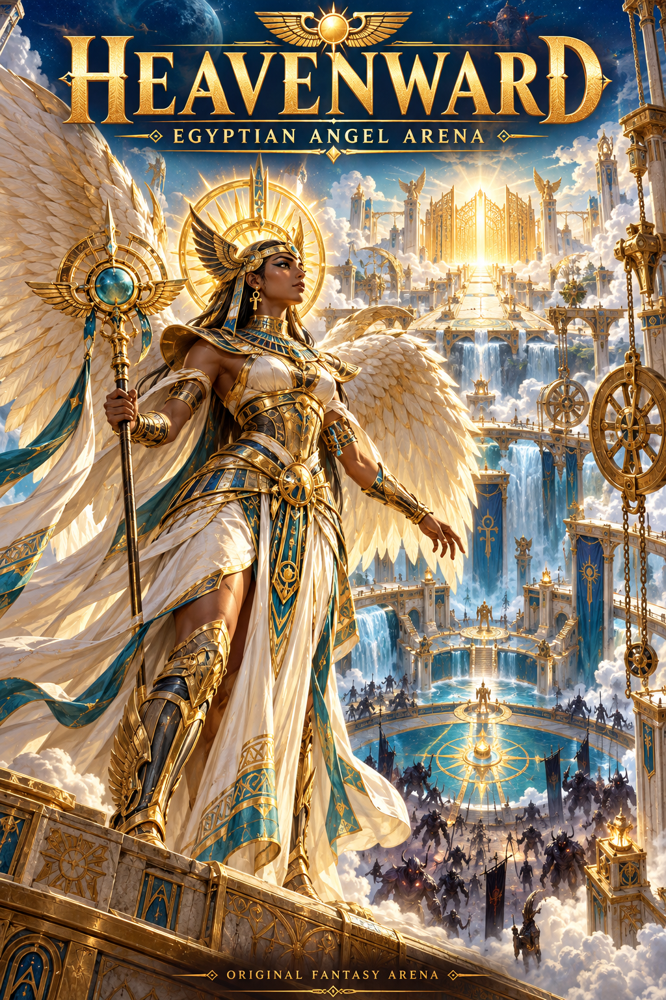

A world worth defending.
The front cover is illustrated artwork. These action clips were recorded from the current playable prototype using its real controls.

Download the front cover
01 / Arena combat
Real movement, attacks, light abilities, jumping and evasive movement in the arena.
02 / The golden gate engine
Both levers drive the pulleys and wheel. The charged mechanism unlocks the gate for a one-time game reward. All gold is fictional.
Download the standalone game · Free web prototype. Browser-hosted co-op requires WebRTC connectivity and the host to keep the room open. Xbox-style controls are supported in browsers; this is not a certified native Xbox release.